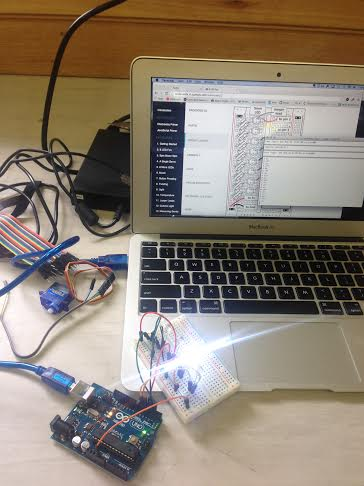

Hello world! My name is Melissa and this is my website. It's a handcrafted thing I put on the internet all by myself and believe me, this doesn't look like much but it's *some* achievement!
Here laid bare are my struggles and successes. I hope that other newbies can hopfully follow my journey and if I succeed, see that some day it'll all fall into place.
I just attended campJS, that's right, I went to a camp to learn Javascript. It didn't happen but it was awesome just to simply have the time to sit still and have the time to write code without any (or many) distractions. As stupid and as I felt everyone was super nice and pretended to be amazed at my creations, it was fun. I found it a real challenge to keep being brave and comfortable at my own level of sheer n00bness. I built a really bad battleship game with some help from a tutorial.
It's not attractive enough to share as it's all prompts and alerts. But, I did figure out how to do simple math stuff with JS. Using math.floor and math.random I set the location of the battleship.I built a really simple quiz on Saturday. I played with an Arduino and made LEDs flash one by one in a cycle using some NodeJS.
On Sunday I was mopey. Lack of internet and lack of sleep totally took their toll.
Great camp though - I think I'd prefer a CSS bootcamp...now that would be fun!
Getting my domain registration renewal meant 12 months had flown by and I'd done nothing. On my emotional upswing I was adament melissakaulfuss.com was getting out there, flat HTML,no styles big deal: 'fuck it, ship it' was my mantra.
Heh, I sure did ship it, but it was hella painful. If you know all of the things you won't remember how fucking confusing all this stuff is.
That's easy - get one, it's human readable.
It's confusing. I have mine on Amazon Route 53, it's cheap but stinky, AWS dudes, you need to give your stuff some serious design love, don't be lazy, you pretty much control the internet now you could at least make it look nice.
DNS are the records that direct any call on the actual domain to the actual server location, which is an IP address. Am I right? Correct me if I'm wrong please.
The problem when you're working with real devs is that you have no understanding of what average people do - what n00bs do. I just thought deploying to Heroku was the easy way, I guess it is, though it isn't if you're new to all this and you've just grasped the concept of git, github, and pushing and pulling from the command line. Nevertheless, this is the route I chose.
So I did something I can't quite remember, so forgive me, I'll find out and document it. But, I added a blank index.php file to my project and when I deploy to Cedar stack it tricks it into thinking it's a PHP project? For some reason, I have no idea why. This works. Anyway...I sound really stupid now and I realise that this is another skill I need to master - documenting things so I can teach others!
Anyway, after some DNS hassles (all down to a spelling error in the CNAME record) I got my site pushed to Heroku and launched!
Learning: I got comfortable with the command line, I understand the relationship between all the disparate elements that make internet.
I've flitted from obsession to obsession in my life - I'm easily distracted by shiny new things, I'm petty. I've been loads of things, done many more (none very well): art student, 'emerging artist',tattoo artist, and now Project Manager at Icelab. The one constant has always been to make things with my own hands (or at least hang out with people that do).
There are numerous ways to channel creativity – I've tried a few - I'm just never really happy unless I'm utterly out of my depth. I think I've finally found the thing that's going to keep me intrigued and engaged for a long time. Put it this way; I'm pretty much freaking the hell out all the time, I'm drowning in the vast pool of what I don't understand and that's good right? From what everyone in the industry tells me, this is a feeling I've got to get used to.
It all begun when I did Rails Girls in September 2013. Confused as ever I slogged away at Codecademy, Rubymonk, I tried my hand at a few Rails tutorials and after months with no progress, I decided I should learn Ruby (straight up). I went to Rails Girls next in Sydney and attended Ruby Conf 2014. I cried and wailed and bashed my head against my laptop for several months and then finally, I decided to give up, feeling defeated.
But then, giving up was never *really* in my nature. I'm pretty stubborn, I like a challenge and when I really want something, I'll figure out a way to get it.
One week out from volunteering at CSS conference AU, I thought I should really learn some CSS if I'm going to get anything out of my time there. I took a look, listened to the speakers at the conference and had a lightbulb moment. I may or may not have said "CSS is awesome because you can write it whilst your drunk - you can't do that with Ruby". But seriously, I think I've found my niche, for now, it feels right.
Learning: if it's not fun, don't force it. To learn something you've got to feel some passion. Fear isn't a great partner when you're testing the water.